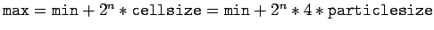
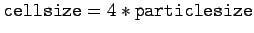
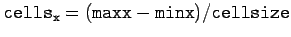
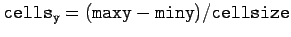
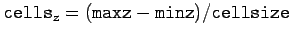
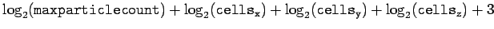
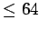

Die Klasse Fluid enthält nur einen Konstruktor
Fluid::Fluid(const long maxparticlecount,
const float particlesize,
const float ax, const float ay, const float az,
const float minx, const float miny, const float minz,
const float maxx, const float maxy, const float maxz)
- const long maxparticlecount
Gibt die maximale Anzahl an zu verwendenden Partikeln an. Dies bezieht
sich sowohl auf Kontrollpartikel, als auch auf die Fluid-Partikel. Ist
maxparticlecount keine Zweierpotenz, so wird die nächst höhere
Zweierpotenz verwendet. Ein Überschreiten dieser Limitierung im späteren
Programmablauf führt zu einem Abbruch!
- const float particlesize
Gibt die Granularität an. Je kleiner die Partikel, desto mehr werden pro
Volumen Flüssigkeit benötigt. Es werden auch mehr Kontrollpartikel benötigt.
- const float ax, const float ay, const float az
Eine globale Beschleunigung. In der Regel die Gravitation.
- const float minx, const float miny, const float minz
Minimale Koordinate des Simulationsbereichs.
- const float maxx, const float maxy, const float maxz
Maximale Koordinate des Simulationsbereichs. Wird vergrößert auf das nächstgrößere

Auch wenn im hier verwendeten Verfahren die Kollisionsdetektion nicht mittels
Expliziter Speicherung aller Zellen realisiert wird, ergibt sich doch eine
Obergrenze bezüglich Partikelanzahl und Simulationsgebiet.
Mit einer Zellgröße von

ergibt sich eine Unterteilung in



.

muß 
sein.
Leo Wandersleb
2005-01-17